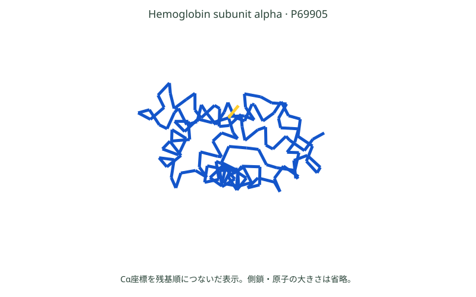

分野・タスクから知る · Life Sciences and Molecules
生命科学・分子
配列・分子・細胞のデータから、構造・機能・相互作用を予測する例と、新しい候補を設計する例を比べます。実験による確認との関係も説明します。
生命科学の予測・設計タスク
生命科学で扱う対象には、アミノ酸が並んだタンパク質、原子が結合した分子、多くの遺伝子が働く細胞などがあります。AIへの入力も、文字のような配列、原子と結合のグラフ、遺伝子ごとの数値の表など、目的に応じて変わります。
| タスク | 入力 → 出力の具体例 | 結果から調べたいこと |
|---|---|---|
| 構造予測 | タンパク質の配列など → 原子の3D配置 | どのように折りたたまれそうか |
| 機能・性質の予測 | 分子構造 → 溶けやすさなどの値 | 実験する候補を絞れるか |
| 相互作用の予測 | タンパク質と候補分子 → 結合のしやすさなど | どの組を詳しく調べるか |
| 細胞応答予測 | 細胞の観測と刺激 → 刺激後の発現量 | どの遺伝子の働きが変わるか |
| 設計 | 欲しい性質や結合相手 → 新しい配列・構造の候補 | 条件に合う候補を作れるか |
予測は、与えられた対象の結果を答えます。設計は、結果に関する条件から対象そのものを作ります。いずれも、実験で確かめる候補を得るための手がかりです。
三つの例の関係：細胞の中では、タンパク質がさまざまな仕事をしています。AlphaFold2はタンパク質の「形を予測」、RFdiffusionは「新しい形を設計」。細胞応答予測は、刺激を受けた「細胞の変化」を予測します。
タンパク質の構造を予測する
タンパク質は、アミノ酸が鎖のようにつながり、折りたたまれたものです。材料の並びから、できあがる3Dの形を予測するのがAlphaFold2です。
MVLSPADKTNVKAAWGKVGAHAGEYGAEALERMFLSFPTTKTYFPHFDLSHGSAQVKGHGKKVADALTNAVAHVDDMPNALSALSDLHAHKLRVDPVNFKLLSHCLLVTLAAHLPAEFTPAVHASLDKFLASVSTVLTSKYR1文字がアミノ酸1個。
この順番でつながっています。
配列に対応する鎖が、
どう折りたたまれるかを予測。
ヘモグロビンα鎖（142残基）。左右は同じタンパク質。AlphaFold DB：P69905 / v6の予測座標から主鎖を描画。陰影は奥行きを示します。
形が分かると、タンパク質の働きや、薬がどこに結びつきそうかを調べる手がかりになります。
2024年ノーベル化学賞につながった研究です。AlphaFold2を開発したDemis HassabisとJohn Jumperは、タンパク質構造予測への貢献で受賞しました。 ノーベル賞公式
予測構造と信頼度

AlphaFold DB：AF-P69905-F1-model_v6。ヒトのヘモグロビンαサブユニット、142残基の予測。座標と信頼度を使って教材側で描画したもので、実験で測定された構造ではない。
色はpLDDT。濃青：90以上、水色：70–90、黄：50–70、橙：50未満。座標の回転だけを行い、予測を再計算しません。
構造の色分けで示すpLDDTは局所的な構造への信頼度の指標です。低い領域は、柔軟性や予測の難しさなど複数の理由で生じます。高い局所信頼度だけで、領域間の配置や実際の機能まで確定できるわけではありません。
分子の性質や相互作用を予測する
分子の構造から溶けやすさなどの性質を予測したり、タンパク質と別の分子が結び付きやすいかを予測したりします。実験する候補を絞るためです。タンパク質の形は、別の分子が結び付く場所を考える手がかりになります。しかし、一つの予測構造だけで、どの条件でどんな働きをするかがすべて決まるわけではありません。周囲の環境や相互作用する相手、形の変化も関わります。
相互作用を調べる例では、タンパク質のくぼみに候補分子を置き、合いそうな位置や結合のしやすさを予測します。「もっともらしい配置が得られた」「実験で結合した」「細胞で望む作用があった」は別々の段階です。モデルの点数を、そのまま実験結果と読まないことが大切です。
刺激による細胞の変化を予測する
遺伝子発現量は、どの遺伝子からどれくらいRNAが作られているかを測る手がかりです。細胞ごとに数値を並べると、「細胞×遺伝子」の大きな表になります。刺激の前後で平均が変わる遺伝子があれば、その刺激への反応を調べられます。
細胞に刺激を与えると、働く遺伝子が変わります。scGenは、刺激を与える前のデータから、与えた後の変化を予測するAIです。ここでの「細胞の状態」は、遺伝子ごとの発現量を指します。
追加の入力 与える刺激の種類
行は遺伝子A〜F、列は細胞。
色で遺伝子の発現量を表します。
同じ行を左右で比較。
A・Dが増え、B・Fが減る例。
入力・出力の見方を示す模式データです。色が濃いほど発現量が多く、C・Eは変わらない例。実測値やscGenの実行結果ではありません。
たとえば、ある刺激でどの遺伝子の働きが強まりそうかを予測します。実験で調べたい細胞や条件を選ぶ手がかりになります。
ただし、多くの単一細胞RNA測定では、同じ細胞を測定してから再び刺激後に測ることはできません。別の細胞群の分布を比べるので、「この一個の細胞が必ずこう変わった」とは限りません。測定日や装置の違いを、刺激の効果と取り違えない評価も必要です。
新しいタンパク質を設計する
RFdiffusionは、新しいタンパク質の形を作るAIです。たとえば、結合させたい相手を指定して、その相手にくっつく形の候補を作ります。
青緑＝結合相手。
この構造と結合させたい場所を指定。
ピンク＝新しい候補。
青緑の相手に結合する形を生成。
Watson et al. (2023), Fig. 1bの入力と最終候補を抜粋。リボンはタンパク質の鎖の折りたたみを表します。本当に結合するかは実験で確かめます。
AlphaFold2は「この配列はどんな形？」、RFdiffusionは「この相手に結合する形を作って」という違いです。 RFdiffusionの論文
未知の分子・細胞での評価
よく似た配列や分子骨格が訓練とテストの両方にあると、未知の種類への予測より簡単になります。近縁な配列や似た骨格をまとめて分割し、どの程度新しい対象へ使えるかを確認します。細胞応答なら、まだ使っていない細胞型や刺激への予測を分けて評価します。
設計では、条件に合う候補を出すだけでなく、合成・測定できるか、実験でも狙った性質を持つかが重要です。研究では、限られた実験回数でよい候補を見つけること、予測が不確かな対象を見分けることが課題になります。